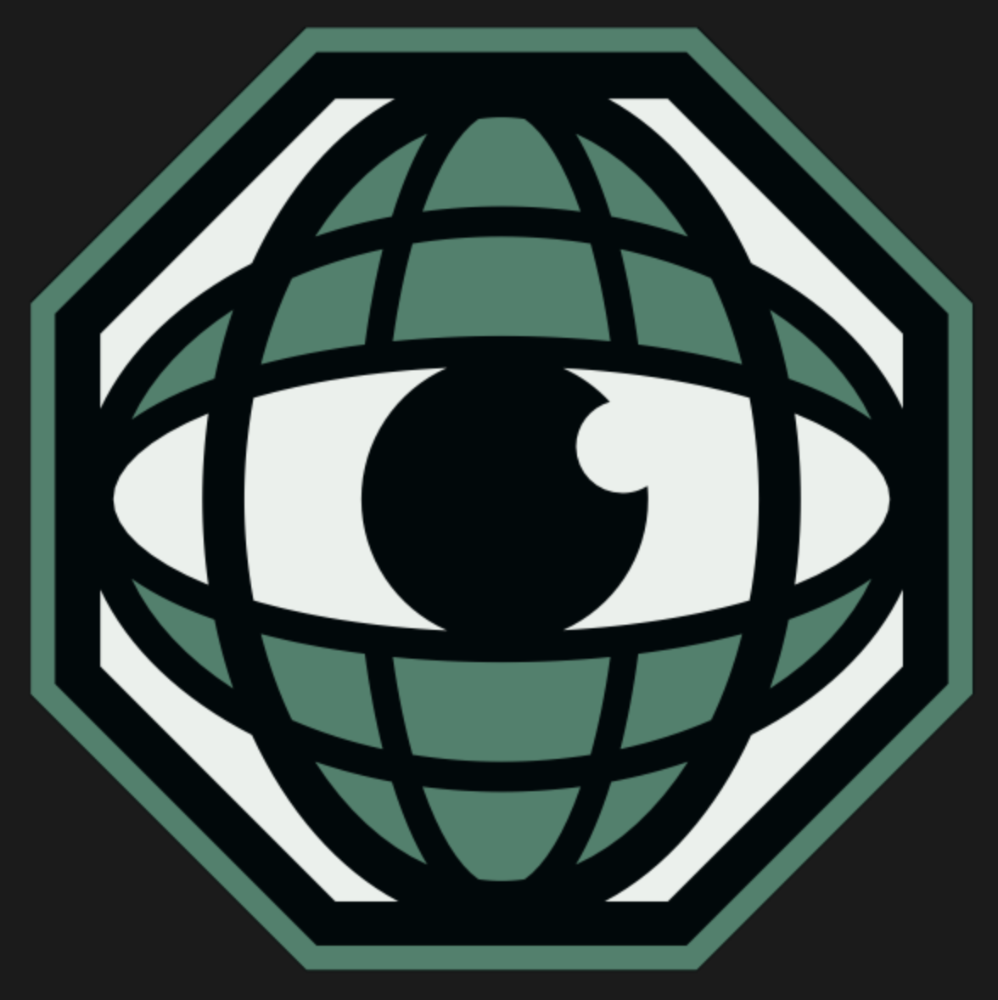

Slides de la charla en el IGSS
La presentación completa que vimos juntos, para que la repases con calma.
Ver presentación →
SAPIENSOPTIMIZADO Suscribirme al SubstackRecursos IGSS
Aquí tienes las slides de la presentación y las guías que mencioné, listas para que empieces a aplicarlas hoy mismo.
La presentación completa que vimos juntos, para que la repases con calma.
Ver presentación →Eje de Movimiento: un plan estructurado para reconstruir tu relación con el entrenamiento.
Ver guía →Eje de Nutrición: reconecta con las señales reales de tu cuerpo alrededor de la comida.
Ver guía →Especialmente si tienes dolor al entrenar — módulos de preparación antes de tu rutina.
Ver guía →Suscríbete para recibir cada semana una reflexión sobre los 5 pilares del Sapiens Optimizado.
Ir al Substack →